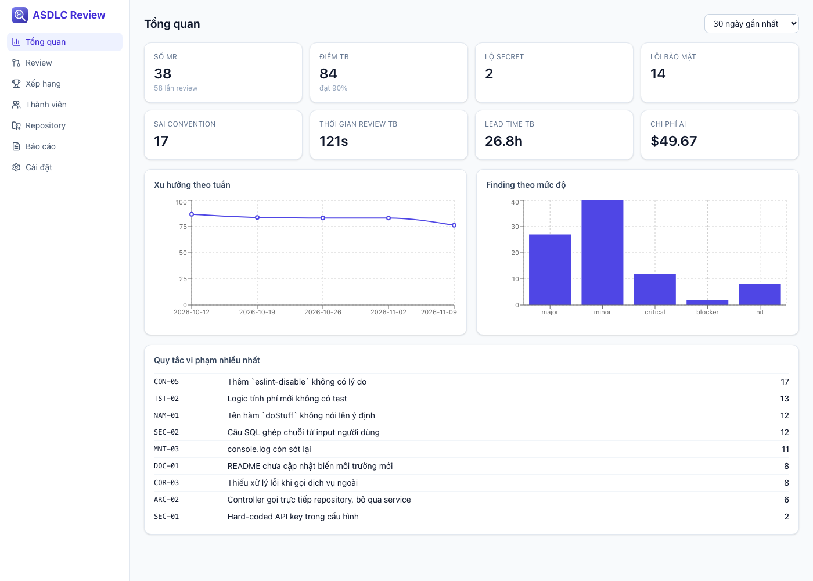
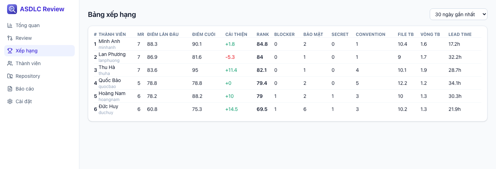
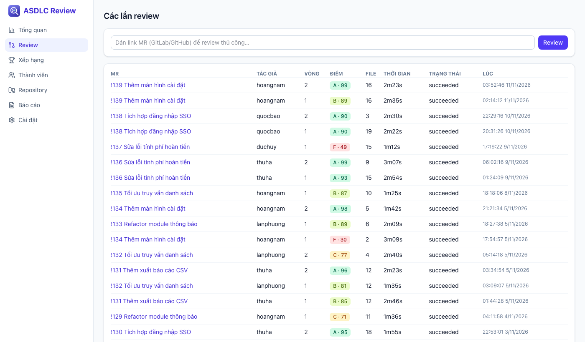
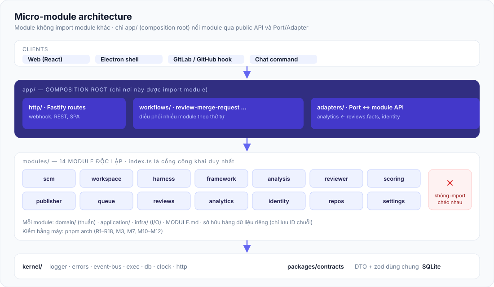
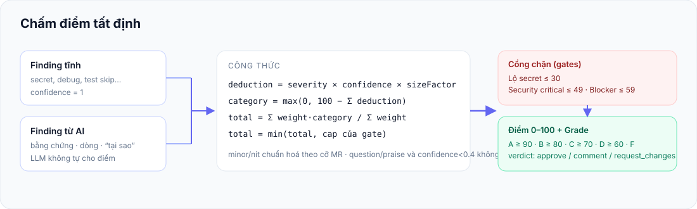

Review hàng chục MR,
không bỏ sót một convention nào.
ASDLC Review nhận trigger từ webhook, chat hoặc thao tác tay, nạp framework ASDLC chung cùng harness riêng của từng repo, nhờ AI tìm vấn đề rồi chấm điểm 0–100 bằng code — cùng một kết quả review luôn ra cùng một điểm.
Tải bản releaseCài đặt trong 5 phútVì sao khác biệt
Hiểu harness của repo
Đọc README, AGENTS.md, CLAUDE.md, subagent, skill và tài liệu tính năng; review theo đúng quy ước repo đó tự đặt ra.
Điểm tất định, có giải trình
AI chỉ trả finding kèm bằng chứng, dòng code và câu hỏi “tại sao”. Điểm do công thức tính, có cổng chặn cho lộ secret và lỗi bảo mật.
Đa nhà cung cấp AI
Claude CLI, Codex CLI hoặc API tương thích OpenAI. Đổi provider ở phần cài đặt, không đụng code.
Thống kê & leaderboard
Số MR, thời gian, file đổi, vi phạm convention, rò rỉ secret, xếp hạng Bayesian công bằng cho người ít MR, báo cáo cuối kỳ xuất .md/.csv.
An toàn khi đọc code không tin cậy
Cấu hình rubric đọc từ commit gốc, không phải nhánh MR; diff được coi là dữ liệu; secret được che, không lưu.
Kiến trúc micro-module
14 module độc lập, kiểm bằng pnpm arch: không import chéo, mỗi module sở hữu dữ liệu riêng.
Luồng xử lý
Xem thử giao diện




Kiến trúc


Cài đặt nhanh
git clone https://github.com/nguyendinhphongdx/asdlc-review.git && cd asdlc-review cp .env.example .env # điền GITLAB_TOKEN, GITLAB_WEBHOOK_SECRET pnpm install pnpm db:push pnpm build && pnpm dev
Cần Node 22, pnpm 10, và claude hoặc codex CLI đã đăng nhập (hoặc API key OpenAI-compatible). Redis là tuỳ chọn.